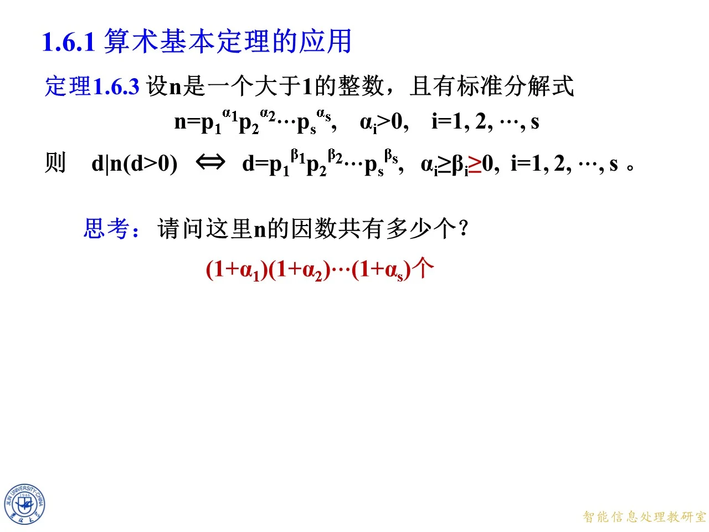
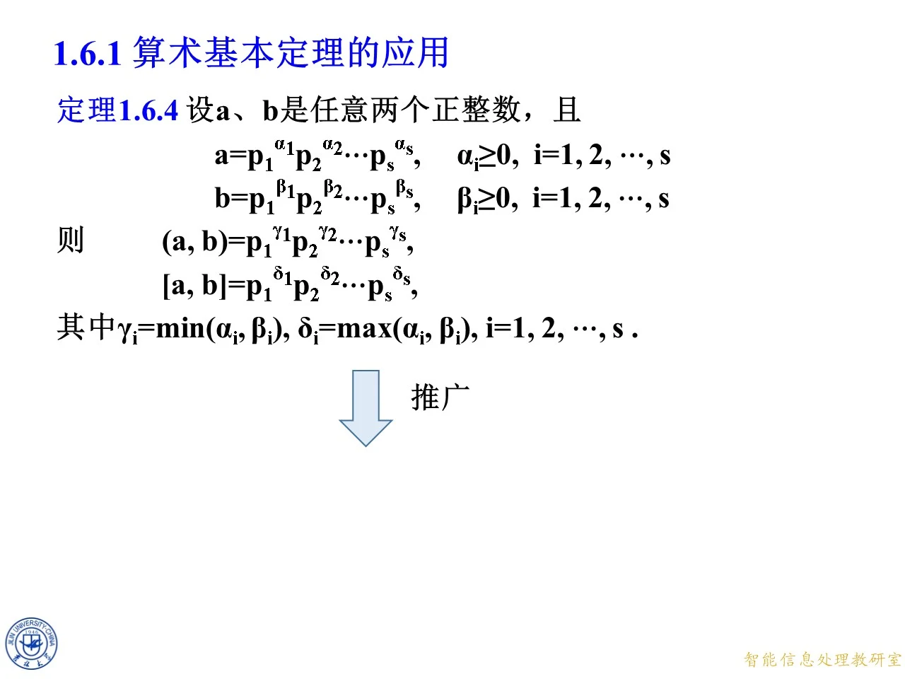
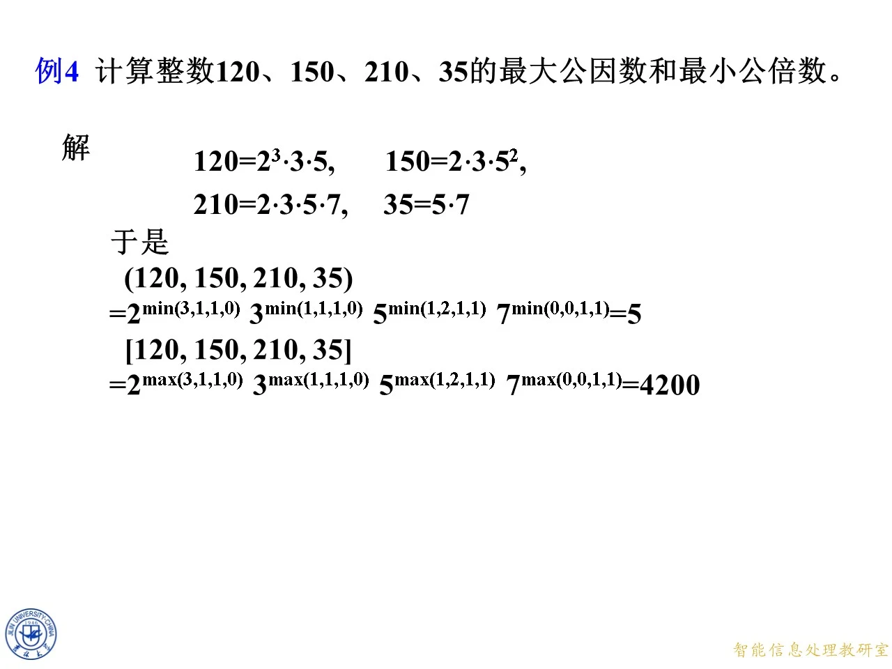

本主题讲算术基本定理（标准分解式）的三个直接应用：刻画一个整数的全部正因数、导出因数个数公式、以及用指数的 min 与 max 统一表示最大公因数和最小公倍数。它承接上一主题对算术基本定理的证明，把「分解唯一性」从一条定理变成一套可操作的计数与计算工具。最后两个例题（互素分解与组合数的整除性）展示了这套工具在稍复杂的论证中的用法，也为第二章同余理论做准备。
定理 1.6.3：整除的指数刻画
◆ p.526-533 ｜定理 1.6.3
设 n n n 1 1 1
n = p 1 α 1 p 2 α 2 ⋯ p s α s , α i > 0 , i = 1 , 2 , ⋯ , s . n=p_1^{\alpha_1}p_2^{\alpha_2}\cdots p_s^{\alpha_s},\quad \alpha_i>0,\ i=1,2,\cdots,s. n = p 1 α 1 p 2 α 2 ⋯ p s α s , α i > 0 , i = 1 , 2 , ⋯ , s .
定理 1.6.3 断言：对正整数 d d d
d ∣ n ⟺ d = p 1 β 1 p 2 β 2 ⋯ p s β s , α i ≥ β i ≥ 0 , i = 1 , 2 , ⋯ , s . d\mid n \iff d=p_1^{\beta_1}p_2^{\beta_2}\cdots p_s^{\beta_s},\quad \alpha_i\ge\beta_i\ge 0,\ i=1,2,\cdots,s. d ∣ n ⟺ d = p 1 β 1 p 2 β 2 ⋯ p s β s , α i ≥ β i ≥ 0 , i = 1 , 2 , ⋯ , s .
也就是说，n n n n n n
必要性（⇒ \Rightarrow ⇒ d ∣ n d\mid n d ∣ n q q q n = d q n=dq n = d q d d d p 1 , ⋯ , p s p_1,\cdots,p_s p 1 , ⋯ , p s d d d q q q n n n s s s p j p_j p j d d d β j \beta_j β j n n n α j \alpha_j α j d q dq d q p j p_j p j α j \alpha_j α j q q q
充分性（⇐ \Leftarrow ⇐ β j ≤ α j \beta_j\le\alpha_j β j ≤ α j d d d q = ∏ p i α i − β i q=\prod p_i^{\alpha_i-\beta_i} q = ∏ p i α i − β i n n n d ∣ n d\mid n d ∣ n
◆ p.534-535 ｜思考：n n n n n n ( 1 + α 1 ) ( 1 + α 2 ) ⋯ ( 1 + α s ) (1+\alpha_1)(1+\alpha_2)\cdots(1+\alpha_s) ( 1 + α 1 ) ( 1 + α 2 ) ⋯ ( 1 + α s ) β i \beta_i β i 0 , 1 , ⋯ , α i 0,1,\cdots,\alpha_i 0 , 1 , ⋯ , α i 1 + α i 1+\alpha_i 1 + α i
拓展 （课件外补充）：这个乘积通常记作因数个数函数 τ ( n ) \tau(n) τ ( n ) d ( n ) d(n) d ( n ) β i \beta_i β i 0 0 0 12 = 2 2 ⋅ 3 12=2^2\cdot 3 12 = 2 2 ⋅ 3 ( 2 + 1 ) ( 1 + 1 ) = 6 (2+1)(1+1)=6 ( 2 + 1 ) ( 1 + 1 ) = 6 1 , 2 , 3 , 4 , 6 , 12 1,2,3,4,6,12 1 , 2 , 3 , 4 , 6 , 12

课件原图 · 9月11日授课（2） · 第 535 页 查看前后已收录原页 → 例 3：因数个数公式
◆ p.536-544 ｜例 3
例 3：设正整数 n n n n = p 1 α 1 p 2 α 2 ⋯ p s α s n=p_1^{\alpha_1}p_2^{\alpha_2}\cdots p_s^{\alpha_s} n = p 1 α 1 p 2 α 2 ⋯ p s α s α i > 0 \alpha_i>0 α i > 0 i = 1 , 2 , ⋯ , s i=1,2,\cdots,s i = 1 , 2 , ⋯ , s n n n
d ( n ) = ( 1 + α 1 ) ( 1 + α 2 ) ⋯ ( 1 + α s ) . d(n)=(1+\alpha_1)(1+\alpha_2)\cdots(1+\alpha_s). d ( n ) = ( 1 + α 1 ) ( 1 + α 2 ) ⋯ ( 1 + α s ) .
证明的思路是把每一个因数与一组指数一一对应：
设 d d d n n n d d d d = p 1 β 1 p 2 β 2 ⋯ p s β s d=p_1^{\beta_1}p_2^{\beta_2}\cdots p_s^{\beta_s} d = p 1 β 1 p 2 β 2 ⋯ p s β s α i ≥ β i ≥ 0 \alpha_i\ge\beta_i\ge 0 α i ≥ β i ≥ 0
β 1 \beta_1 β 1 0 0 0 α 1 \alpha_1 α 1 1 + α 1 1+\alpha_1 1 + α 1 β 2 \beta_2 β 2 0 0 0 α 2 \alpha_2 α 2 1 + α 2 1+\alpha_2 1 + α 2 β s \beta_s β s 1 + α s 1+\alpha_s 1 + α s 由标准分解式的唯一性，不同的指数组 ( β 1 , ⋯ , β s ) (\beta_1,\cdots,\beta_s) ( β 1 , ⋯ , β s ) d d d
d ( n ) = ( 1 + α 1 ) ( 1 + α 2 ) ⋯ ( 1 + α s ) . d(n)=(1+\alpha_1)(1+\alpha_2)\cdots(1+\alpha_s). d ( n ) = ( 1 + α 1 ) ( 1 + α 2 ) ⋯ ( 1 + α s ) .
拓展 （课件外补充）：用具体数字验证一下。取 120 = 2 3 ⋅ 3 ⋅ 5 120=2^3\cdot 3\cdot 5 120 = 2 3 ⋅ 3 ⋅ 5 d ( 120 ) = ( 3 + 1 ) ( 1 + 1 ) ( 1 + 1 ) = 16 d(120)=(3+1)(1+1)(1+1)=16 d ( 120 ) = ( 3 + 1 ) ( 1 + 1 ) ( 1 + 1 ) = 16 1 1 1 120 120 120 120 120 120 16 16 16 α i > 0 \alpha_i>0 α i > 0 0 0 0 ( 1 + 0 ) = 1 (1+0)=1 ( 1 + 0 ) = 1
定理 1.6.4：最大公因数与最小公倍数的指数公式
◆ p.545-552 ｜定理 1.6.4 及其证明
定理 1.6.4：设 a a a b b b
a = p 1 α 1 p 2 α 2 ⋯ p s α s , b = p 1 β 1 p 2 β 2 ⋯ p s β s , α i ≥ 0 , β i ≥ 0 , i = 1 , 2 , ⋯ , s , a=p_1^{\alpha_1}p_2^{\alpha_2}\cdots p_s^{\alpha_s},\quad b=p_1^{\beta_1}p_2^{\beta_2}\cdots p_s^{\beta_s},\quad \alpha_i\ge 0,\ \beta_i\ge 0,\ i=1,2,\cdots,s, a = p 1 α 1 p 2 α 2 ⋯ p s α s , b = p 1 β 1 p 2 β 2 ⋯ p s β s , α i ≥ 0 , β i ≥ 0 , i = 1 , 2 , ⋯ , s ,
（允许指数为零，即某素数可能只整除其中一个数，或都不整除。）则
( a , b ) = p 1 γ 1 p 2 γ 2 ⋯ p s γ s , [ a , b ] = p 1 δ 1 p 2 δ 2 ⋯ p s δ s , (a,b)=p_1^{\gamma_1}p_2^{\gamma_2}\cdots p_s^{\gamma_s},\qquad [a,b]=p_1^{\delta_1}p_2^{\delta_2}\cdots p_s^{\delta_s}, ( a , b ) = p 1 γ 1 p 2 γ 2 ⋯ p s γ s , [ a , b ] = p 1 δ 1 p 2 δ 2 ⋯ p s δ s ,
其中 γ i = min ( α i , β i ) \gamma_i=\min(\alpha_i,\beta_i) γ i = min ( α i , β i ) δ i = max ( α i , β i ) \delta_i=\max(\alpha_i,\beta_i) δ i = max ( α i , β i ) i = 1 , 2 , ⋯ , s i=1,2,\cdots,s i = 1 , 2 , ⋯ , s
证明：设 d = p 1 γ 1 p 2 γ 2 ⋯ p s γ s d=p_1^{\gamma_1}p_2^{\gamma_2}\cdots p_s^{\gamma_s} d = p 1 γ 1 p 2 γ 2 ⋯ p s γ s γ i \gamma_i γ i
由定理 1.6.3（把该定理中的 n n n a a a b b b d d d a a a b b b d ∣ a d\mid a d ∣ a d ∣ b d\mid b d ∣ b 0 ≤ γ i ≤ α i 0\le\gamma_i\le\alpha_i 0 ≤ γ i ≤ α i 0 ≤ γ i ≤ β i 0\le\gamma_i\le\beta_i 0 ≤ γ i ≤ β i i i i
两个不等式 0 ≤ γ i ≤ α i 0\le\gamma_i\le\alpha_i 0 ≤ γ i ≤ α i 0 ≤ γ i ≤ β i 0\le\gamma_i\le\beta_i 0 ≤ γ i ≤ β i 0 ≤ γ i ≤ min ( α i , β i ) 0\le\gamma_i\le\min(\alpha_i,\beta_i) 0 ≤ γ i ≤ min ( α i , β i )
因此公因数中指数最大的那一个恰好取 γ i = min ( α i , β i ) \gamma_i=\min(\alpha_i,\beta_i) γ i = min ( α i , β i ) ( a , b ) = ∏ p i min ( α i , β i ) (a,b)=\prod p_i^{\min(\alpha_i,\beta_i)} ( a , b ) = ∏ p i m i n ( α i , β i )
类似可证 [ a , b ] [a,b] [ a , b ] a a a b b b α i \alpha_i α i β i \beta_i β i max ( α i , β i ) \max(\alpha_i,\beta_i) max ( α i , β i ) [ a , b ] = ∏ p i max ( α i , β i ) [a,b]=\prod p_i^{\max(\alpha_i,\beta_i)} [ a , b ] = ∏ p i m a x ( α i , β i )
◆ p.553-557 ｜推论：( a , b ) [ a , b ] = a b (a,b)[a,b]=ab ( a , b ) [ a , b ] = ab a a a b b b ( a , b ) [ a , b ] = a b (a,b)[a,b]=ab ( a , b ) [ a , b ] = ab
证明：对任意两个整数 α \alpha α β \beta β min ( α , β ) + max ( α , β ) = α + β \min(\alpha,\beta)+\max(\alpha,\beta)=\alpha+\beta min ( α , β ) + max ( α , β ) = α + β ( a , b ) (a,b) ( a , b ) [ a , b ] [a,b] [ a , b ] p i p_i p i min ( α i , β i ) + max ( α i , β i ) = α i + β i \min(\alpha_i,\beta_i)+\max(\alpha_i,\beta_i)=\alpha_i+\beta_i min ( α i , β i ) + max ( α i , β i ) = α i + β i a b ab ab ( a , b ) [ a , b ] = a b (a,b)[a,b]=ab ( a , b ) [ a , b ] = ab
p.557 这一帧是在同页下方出现「推广」箭头的过渡画面，指向下一页把结论推广到 k k k
拓展 （课件外补充）：这个恒等式是求最小公倍数的实用公式：先求 ( a , b ) (a,b) ( a , b ) [ a , b ] = a b / ( a , b ) [a,b]=ab/(a,b) [ a , b ] = ab / ( a , b ) 两个 数成立；三个以上时一般 ( a , b , c ) [ a , b , c ] ≠ a b c (a,b,c)[a,b,c]\ne abc ( a , b , c ) [ a , b , c ] = ab c

课件原图 · 9月11日授课（2） · 第 557 页 查看前后已收录原页 → 定理 1.6.5：多个整数的情形
◆ p.558 ｜定理 1.6.5
定理 1.6.5 把定理 1.6.4 推广到 k k k a 1 , ⋯ , a k a_1,\cdots,a_k a 1 , ⋯ , a k
a j = p 1 α 1 j p 2 α 2 j ⋯ p s α s j , α i j ≥ 0 , i = 1 , 2 , ⋯ , s , a_j=p_1^{\alpha_{1j}}p_2^{\alpha_{2j}}\cdots p_s^{\alpha_{sj}},\quad \alpha_{ij}\ge 0,\ i=1,2,\cdots,s, a j = p 1 α 1 j p 2 α 2 j ⋯ p s α s j , α ij ≥ 0 , i = 1 , 2 , ⋯ , s ,
（同样允许指数为零，即把所有 a j a_j a j
( a 1 , a 2 , ⋯ , a k ) = p 1 γ 1 p 2 γ 2 ⋯ p s γ s , γ i = min ( α i 1 , ⋯ , α i k ) , 1 ≤ i ≤ s , (a_1,a_2,\cdots,a_k)=p_1^{\gamma_1}p_2^{\gamma_2}\cdots p_s^{\gamma_s},\quad \gamma_i=\min(\alpha_{i1},\cdots,\alpha_{ik}),\ 1\le i\le s, ( a 1 , a 2 , ⋯ , a k ) = p 1 γ 1 p 2 γ 2 ⋯ p s γ s , γ i = min ( α i 1 , ⋯ , α ik ) , 1 ≤ i ≤ s ,
[ a 1 , a 2 , ⋯ , a k ] = p 1 δ 1 p 2 δ 2 ⋯ p s δ s , δ i = max ( α i 1 , ⋯ , α i k ) , 1 ≤ i ≤ s . [a_1,a_2,\cdots,a_k]=p_1^{\delta_1}p_2^{\delta_2}\cdots p_s^{\delta_s},\quad \delta_i=\max(\alpha_{i1},\cdots,\alpha_{ik}),\ 1\le i\le s. [ a 1 , a 2 , ⋯ , a k ] = p 1 δ 1 p 2 δ 2 ⋯ p s δ s , δ i = max ( α i 1 , ⋯ , α ik ) , 1 ≤ i ≤ s .
证明思想与两数情形完全相同：公因数的指数不超过每一个 α i j \alpha_{ij} α ij α i j \alpha_{ij} α ij
例 4：四个整数的最大公因数与最小公倍数
◆ p.559 ｜例 4
例 4：计算整数 120 120 120 150 150 150 210 210 210 35 35 35
解：先各自分解并写到同一张素数表上：
120 = 2 3 ⋅ 3 ⋅ 5 , 150 = 2 ⋅ 3 ⋅ 5 2 , 120=2^3\cdot 3\cdot 5,\qquad 150=2\cdot 3\cdot 5^2, 120 = 2 3 ⋅ 3 ⋅ 5 , 150 = 2 ⋅ 3 ⋅ 5 2 ,
210 = 2 ⋅ 3 ⋅ 5 ⋅ 7 , 35 = 5 ⋅ 7. 210=2\cdot 3\cdot 5\cdot 7,\qquad 35=5\cdot 7. 210 = 2 ⋅ 3 ⋅ 5 ⋅ 7 , 35 = 5 ⋅ 7.
四个数中出现的素数共 2 , 3 , 5 , 7 2,3,5,7 2 , 3 , 5 , 7 35 35 35 2 , 3 2,3 2 , 3 120 , 150 , 35 120,150,35 120 , 150 , 35 7 7 7 0 0 0
( 120 , 150 , 210 , 35 ) = 2 min ( 3 , 1 , 1 , 0 ) ⋅ 3 min ( 1 , 1 , 1 , 0 ) ⋅ 5 min ( 1 , 2 , 1 , 1 ) ⋅ 7 min ( 0 , 0 , 1 , 1 ) = 2 0 ⋅ 3 0 ⋅ 5 1 ⋅ 7 0 = 5 , (120,150,210,35)=2^{\min(3,1,1,0)}\cdot 3^{\min(1,1,1,0)}\cdot 5^{\min(1,2,1,1)}\cdot 7^{\min(0,0,1,1)}=2^0\cdot 3^0\cdot 5^1\cdot 7^0=5, ( 120 , 150 , 210 , 35 ) = 2 m i n ( 3 , 1 , 1 , 0 ) ⋅ 3 m i n ( 1 , 1 , 1 , 0 ) ⋅ 5 m i n ( 1 , 2 , 1 , 1 ) ⋅ 7 m i n ( 0 , 0 , 1 , 1 ) = 2 0 ⋅ 3 0 ⋅ 5 1 ⋅ 7 0 = 5 ,
[ 120 , 150 , 210 , 35 ] = 2 max ( 3 , 1 , 1 , 0 ) ⋅ 3 max ( 1 , 1 , 1 , 0 ) ⋅ 5 max ( 1 , 2 , 1 , 1 ) ⋅ 7 max ( 0 , 0 , 1 , 1 ) = 2 3 ⋅ 3 ⋅ 5 2 ⋅ 7 = 4200. [120,150,210,35]=2^{\max(3,1,1,0)}\cdot 3^{\max(1,1,1,0)}\cdot 5^{\max(1,2,1,1)}\cdot 7^{\max(0,0,1,1)}=2^3\cdot 3\cdot 5^2\cdot 7=4200. [ 120 , 150 , 210 , 35 ] = 2 m a x ( 3 , 1 , 1 , 0 ) ⋅ 3 m a x ( 1 , 1 , 1 , 0 ) ⋅ 5 m a x ( 1 , 2 , 1 , 1 ) ⋅ 7 m a x ( 0 , 0 , 1 , 1 ) = 2 3 ⋅ 3 ⋅ 5 2 ⋅ 7 = 4200.
即最大公因数为 5 5 5 4200 4200 4200 gcd ( 120 , 150 , 210 , 35 ) = 5 \gcd(120,150,210,35)=5 g cd( 120 , 150 , 210 , 35 ) = 5 = 4200 =4200 = 4200
拓展 （课件外补充）：例 4 里最大公因数只由素数 5 5 5 2 2 2 3 3 3 35 35 35 0 0 0 7 7 7 0 0 0

课件原图 · 9月11日授课（2） · 第 559 页 查看前后已收录原页 → 定理 1.6.6：最小公倍数的互素分解
◆ p.560-564 ｜定理 1.6.6、例 6 与例 7
定理 1.6.6：设 a a a b b b a ′ ∣ a a'\mid a a ′ ∣ a b ′ ∣ b b'\mid b b ′ ∣ b
a ′ b ′ = [ a , b ] , ( a ′ , b ′ ) = 1. a'b'=[a,b],\qquad (a',b')=1. a ′ b ′ = [ a , b ] , ( a ′ , b ′ ) = 1.
证明（构造性的）：设 a a a b b b a = p 1 α 1 p 2 α 2 ⋯ p s α s a=p_1^{\alpha_1}p_2^{\alpha_2}\cdots p_s^{\alpha_s} a = p 1 α 1 p 2 α 2 ⋯ p s α s b = p 1 β 1 p 2 β 2 ⋯ p s β s b=p_1^{\beta_1}p_2^{\beta_2}\cdots p_s^{\beta_s} b = p 1 β 1 p 2 β 2 ⋯ p s β s α i ≥ β i ≥ 0 \alpha_i\ge\beta_i\ge 0 α i ≥ β i ≥ 0 i = 1 , 2 , ⋯ , t i=1,2,\cdots,t i = 1 , 2 , ⋯ , t β i ≥ α i ≥ 0 \beta_i\ge\alpha_i\ge 0 β i ≥ α i ≥ 0 i = t + 1 , ⋯ , s i=t+1,\cdots,s i = t + 1 , ⋯ , s
a ′ = p 1 α 1 p 2 α 2 ⋯ p t α t , b ′ = p t + 1 β t + 1 p t + 2 β t + 2 ⋯ p s β s , a'=p_1^{\alpha_1}p_2^{\alpha_2}\cdots p_t^{\alpha_t},\qquad b'=p_{t+1}^{\beta_{t+1}}p_{t+2}^{\beta_{t+2}}\cdots p_s^{\beta_s}, a ′ = p 1 α 1 p 2 α 2 ⋯ p t α t , b ′ = p t + 1 β t + 1 p t + 2 β t + 2 ⋯ p s β s ,
则 a ′ a' a ′ b ′ b' b ′ α i ≤ α i \alpha_i\le\alpha_i α i ≤ α i β i ≤ β i \beta_i\le\beta_i β i ≤ β i a ′ ∣ a a'\mid a a ′ ∣ a b ′ ∣ b b'\mid b b ′ ∣ b a ′ a' a ′ b ′ b' b ′ ( a ′ , b ′ ) = 1 (a',b')=1 ( a ′ , b ′ ) = 1 a ′ b ′ a'b' a ′ b ′ p i p_i p i i ≤ t i\le t i ≤ t α i = max ( α i , β i ) \alpha_i=\max(\alpha_i,\beta_i) α i = max ( α i , β i ) i > t i>t i > t β i = max ( α i , β i ) \beta_i=\max(\alpha_i,\beta_i) β i = max ( α i , β i ) a ′ b ′ = [ a , b ] a'b'=[a,b] a ′ b ′ = [ a , b ]
例 6（p.563 帧）：正整数 a = 4 = 2 2 a=4=2^2 a = 4 = 2 2 b = 6 = 2 ⋅ 3 b=6=2\cdot 3 b = 6 = 2 ⋅ 3 a ′ = 2 2 a'=2^2 a ′ = 2 2 b ′ = 3 b'=3 b ′ = 3 4 ∣ 4 4\mid 4 4 ∣ 4 3 ∣ 6 3\mid 6 3 ∣ 6 ( 4 , 3 ) = 1 (4,3)=1 ( 4 , 3 ) = 1 4 × 3 = 12 = [ 4 , 6 ] 4\times 3=12=[4,6] 4 × 3 = 12 = [ 4 , 6 ]
例 7（p.564 帧）：正整数 a = 1210 = 2 ⋅ 5 ⋅ 11 2 a=1210=2\cdot 5\cdot 11^2 a = 1210 = 2 ⋅ 5 ⋅ 1 1 2 b = 363 = 3 ⋅ 11 2 b=363=3\cdot 11^2 b = 363 = 3 ⋅ 1 1 2
a ′ = 2 ⋅ 5 , b ′ = 3 ⋅ 11 2 , a'=2\cdot 5,\quad b'=3\cdot 11^2, a ′ = 2 ⋅ 5 , b ′ = 3 ⋅ 1 1 2 ,
或
a ′ = 2 ⋅ 5 ⋅ 11 2 , b ′ = 3. a'=2\cdot 5\cdot 11^2,\quad b'=3. a ′ = 2 ⋅ 5 ⋅ 1 1 2 , b ′ = 3.
两种取法都满足要求：例如第一种，10 ∣ 1210 10\mid 1210 10 ∣ 1210 363 ∣ 363 363\mid 363 363 ∣ 363 ( 10 , 363 ) = 1 (10,363)=1 ( 10 , 363 ) = 1 10 × 363 = 3630 = [ 1210 , 363 ] 10\times 363=3630=[1210,363] 10 × 363 = 3630 = [ 1210 , 363 ] 3630 3630 3630 11 2 11^2 1 1 2 a ′ a' a ′ b ′ b' b ′ 绝不能两侧都放 ：若取 a ′ = 1210 a'=1210 a ′ = 1210 b ′ = 363 b'=363 b ′ = 363 ( a ′ , b ′ ) = 121 ≠ 1 (a',b')=121\ne 1 ( a ′ , b ′ ) = 121 = 1 1210 × 363 1210\times 363 1210 × 363 11 2 11^2 1 1 2
拓展 （课件外补充）：定理 1.6.6 的价值在于把「存在」升级为「会构造」。记忆口诀：把两数写到同一张素数表上，每个素数的最高次幂整块分给一侧，同一素数不许两边都出现。这个构造在后续证明（例如与中国剩余定理、原根存在性相关的论证）中会被反复借用。
例 8：素数幂不整除组合数
◆ p.565-581 ｜例 8
例 8：设 n n n p p p n n n p α ∣ n p^{\alpha}\mid n p α ∣ n p α + 1 ∤ n p^{\alpha+1}\nmid n p α + 1 ∤ n
p α ∤ ( n p ) , p^{\alpha}\nmid \binom{n}{p}, p α ∤ ( p n ) ,
其中
( n p ) = n ( n − 1 ) ⋯ ( n − p + 1 ) p ! . \binom{n}{p}=\frac{n(n-1)\cdots(n-p+1)}{p!}. ( p n ) = p ! n ( n − 1 ) ⋯ ( n − p + 1 ) .
（课件用了十几页动画逐步展开这同一个证明，页面内容一致，以下按最终帧完整讲解。）
证明的思路是：把组合数改写成 p α − 1 p^{\alpha-1} p α − 1 不被 p p p 的整数，于是它最多含 p p p α − 1 \alpha-1 α − 1
由题设 p α ∣ n p^{\alpha}\mid n p α ∣ n p α + 1 ∤ n p^{\alpha+1}\nmid n p α + 1 ∤ n n = p α m n=p^{\alpha}m n = p α m p ∤ m p\nmid m p ∤ m
从分子 n ( n − 1 ) ⋯ ( n − p + 1 ) n(n-1)\cdots(n-p+1) n ( n − 1 ) ⋯ ( n − p + 1 ) p ! = p ⋅ ( p − 1 ) ! p!=p\cdot(p-1)! p ! = p ⋅ ( p − 1 )! p p p
( n p ) = n p ⋅ ( n − 1 ) ⋯ ( n − p + 1 ) ( p − 1 ) ! = n p ⋅ ( n − 1 p − 1 ) . \binom{n}{p}=\frac{n}{p}\cdot\frac{(n-1)\cdots(n-p+1)}{(p-1)!}=\frac{n}{p}\cdot\binom{n-1}{p-1}. ( p n ) = p n ⋅ ( p − 1 )! ( n − 1 ) ⋯ ( n − p + 1 ) = p n ⋅ ( p − 1 n − 1 ) .
代入 n = p α m n=p^{\alpha}m n = p α m ( n p ) = p α − 1 m ⋅ ( n − 1 ) ⋯ ( n − p + 1 ) ( p − 1 ) ! \binom{n}{p}=p^{\alpha-1}m\cdot\dfrac{(n-1)\cdots(n-p+1)}{(p-1)!} ( p n ) = p α − 1 m ⋅ ( p − 1 )! ( n − 1 ) ⋯ ( n − p + 1 ) p p p
对 1 ≤ k ≤ p − 1 1\le k\le p-1 1 ≤ k ≤ p − 1 p ∤ k p\nmid k p ∤ k 0 < k < p 0<k<p 0 < k < p p ∣ n p\mid n p ∣ n p ∣ n − k p\mid n-k p ∣ n − k p p p n n n n − k n-k n − k k k k p ∤ n − k p\nmid n-k p ∤ n − k
p p p p ∤ n − k p\nmid n-k p ∤ n − k ( n − k , p ) = 1 (n-k,p)=1 ( n − k , p ) = 1 ( n − 1 ) ( n − 2 ) ⋯ ( n − p + 1 ) (n-1)(n-2)\cdots(n-p+1) ( n − 1 ) ( n − 2 ) ⋯ ( n − p + 1 ) p p p p p p ( ( n − 1 ) ( n − 2 ) ⋯ ( n − p + 1 ) , p ) = 1 ((n-1)(n-2)\cdots(n-p+1),\,p)=1 (( n − 1 ) ( n − 2 ) ⋯ ( n − p + 1 ) , p ) = 1 p p p p p p 而分母 ( p − 1 ) ! (p-1)! ( p − 1 )! p − 1 < p p-1<p p − 1 < p p ∤ ( p − 1 ) ! p\nmid(p-1)! p ∤ ( p − 1 )! ( n − 1 ) ⋯ ( n − p + 1 ) / ( p − 1 ) ! = ( n − 1 p − 1 ) (n-1)\cdots(n-p+1)/(p-1)!=\binom{n-1}{p-1} ( n − 1 ) ⋯ ( n − p + 1 ) / ( p − 1 )! = ( p − 1 n − 1 ) p p p ( n − 1 ) ⋯ ( n − p + 1 ) (n-1)\cdots(n-p+1) ( n − 1 ) ⋯ ( n − p + 1 ) p p p p ∤ ( n − 1 p − 1 ) p\nmid\binom{n-1}{p-1} p ∤ ( p − 1 n − 1 )
于是 ( n p ) = p α − 1 ⋅ ( m ⋅ ( n − 1 p − 1 ) ) \binom{n}{p}=p^{\alpha-1}\cdot\left(m\cdot\binom{n-1}{p-1}\right) ( p n ) = p α − 1 ⋅ ( m ⋅ ( p − 1 n − 1 ) ) p p p p p p ( n p ) \binom{n}{p} ( p n ) p p p α − 1 \alpha-1 α − 1 p α p^{\alpha} p α p α ∤ ( n p ) p^{\alpha}\nmid\binom{n}{p} p α ∤ ( p n ) p α − 1 ∣ ( n p ) p^{\alpha-1}\mid\binom{n}{p} p α − 1 ∣ ( p n )
用具体数字验证：取 n = 18 = 2 ⋅ 3 2 n=18=2\cdot 3^2 n = 18 = 2 ⋅ 3 2 p = 3 p=3 p = 3 α = 2 \alpha=2 α = 2 ( 18 3 ) = 816 = 2 4 ⋅ 3 ⋅ 17 \binom{18}{3}=816=2^4\cdot 3\cdot 17 ( 3 18 ) = 816 = 2 4 ⋅ 3 ⋅ 17 9 ∤ 816 9\nmid 816 9 ∤ 816 3 ∣ 816 3\mid 816 3 ∣ 816 n = 12 = 2 2 ⋅ 3 n=12=2^2\cdot 3 n = 12 = 2 2 ⋅ 3 p = 2 p=2 p = 2 α = 2 \alpha=2 α = 2 ( 12 2 ) = 66 \binom{12}{2}=66 ( 2 12 ) = 66 4 ∤ 66 4\nmid 66 4 ∤ 66 2 ∣ 66 2\mid 66 2 ∣ 66
拓展 （课件外补充）：注意结论的方向——课件证明的是 p α p^{\alpha} p α 不 整除 ( n p ) \binom{n}{p} ( p n ) n n n p p p p ! p! p ! p p p p p p α \alpha α α − 1 \alpha-1 α − 1 m o d p \bmod\ p mod p